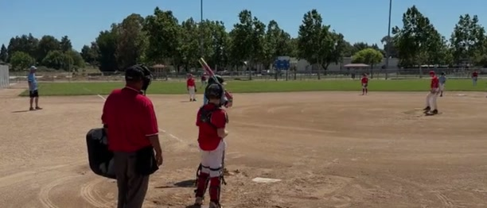
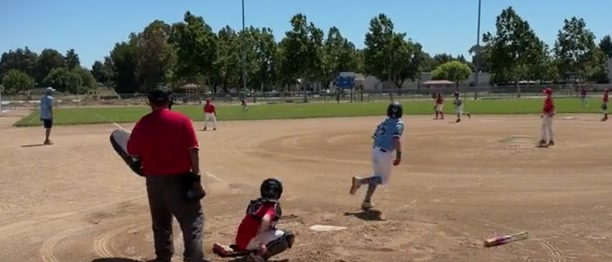
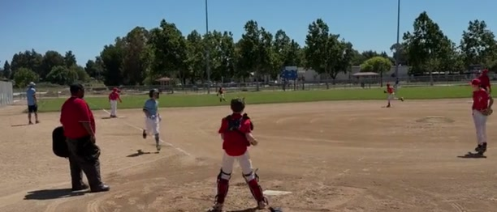

A dash cam for youth sports
Keep the highlights. Skip the two-hour recording.
Watch the game and save only the moment that mattered. Sideline Save keeps up to 30 seconds ready, so after something great happens, tap Record and the app goes back in time to get the beginning of the play.

Download free for iPhone · 15 saved videos included · iOS 17+ · No account or ads
-
1
Watch the game, not your screen.
Use a $5 bungee cord to mount your iPhone to a fence. Keep your hands free, stay present, and stop holding a phone in another parent’s view.
-
2
Skip the storage and editing marathon.
A two-hour 4K/60 recording can use about 53 GBEstimate: 440 MB per minute for 4K/60 HEVC × 120 minutes = 52,800 MB, or about 53 GB. and take about 15 minutesEstimate for a focused highlight pass: about 10 minutes to skim at high speed, plus 5 minutes to select, trim, and export a few clips. to review and trim. Sideline Save saves you 98% of that storage and time.Illustrative estimate: about two minutes of highlights instead of 120 minutes of footage, and roughly 18 seconds of total tap-to-save interaction instead of a 15-minute editing pass. Actual savings vary.
-
3
Decide after it happens.
Sideline Save keeps a rolling window ready. Once you know the moment was special, tap Record to keep the lead-in, then tap again when the play is over.
Three simple steps
How to use Sideline Save
Keep the camera ready, tap after the play, and keep recording.

Step 1: Always be shooting
Sideline Save is always keeping the recent action ready. Keep the camera pointed at the player and the play on the field.

Step 2: Record after the play
When the play is over, tap the button once to record the moment.

Step 3: Continue recording as normal
Continue recording as normal. When the play is over, tap the same button again to stop and save the finished clip.
Quick answers
More about how Sideline Save works.
What sports does Sideline Save work with?
Every sport. Choose a built-in starting mode for Baseball, Basketball, Soccer, or Football, or use Custom for anything else. Baseball works well for softball, and Custom is a good starting point for volleyball.
Will Sideline Save kill my battery?
Sideline Save does not use more battery than leaving the built-in Camera app recording for the same amount of time. In our iPhone 17 Pro testing, budget roughly 25% of a full charge for a two-hour game. For the best battery life, lower the screen brightness and shade the phone from direct sunlight.
Is the whole game being saved somewhere?
No. Like a dash cam or doorbell camera, Sideline Save keeps a temporary rolling window. Only the moments you choose are finished and saved to Photos; closing the app stops capture.
How does the video compare with GameChanger?
GameChanger’s full-event video is limited to 720p, which can look soft when you crop or zoom. Sideline Save records using your chosen iPhone camera quality, so it can preserve much more detail. GameChanger only provides a full-event replay when the event was live streamed, and non-staff viewers need Premium or a Premium Team Pass. Read GameChanger’s documentation.
Your footage never goes to a Sideline Save cloud.
Everything stays on your iPhone—Sideline Save never uploads your footage. There are no accounts, ads, or cross-app tracking.
Independent and personal
Built by a baseball dad with the same problem.
Sideline Save is a handcrafted app made by one person. I built it after getting tired of recording pitch after pitch at my son’s games, deleting nearly all of them, and still worrying that the next pitch would be the one I missed.
Read why I built Sideline Save